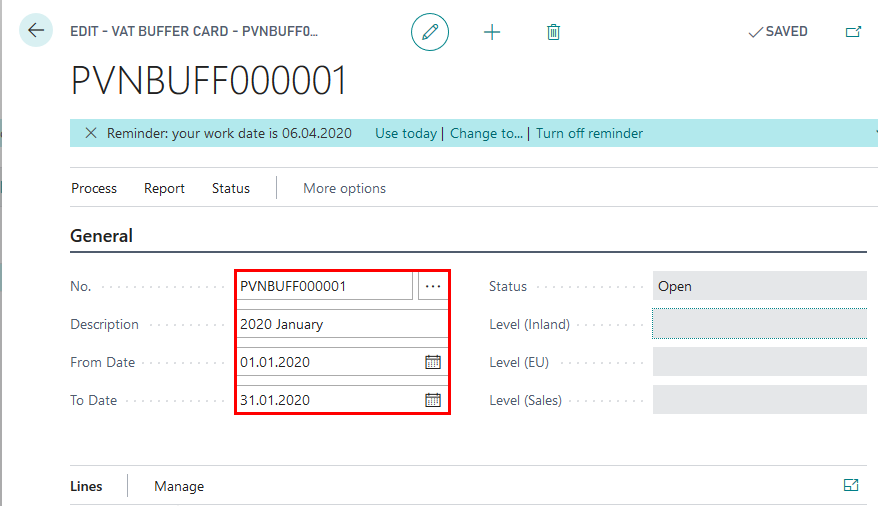
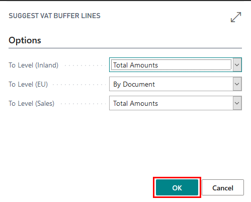
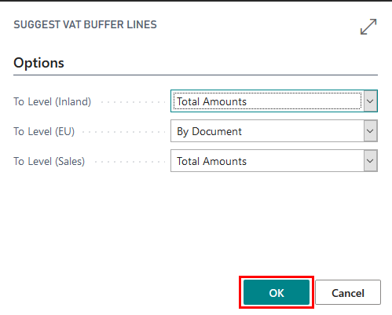

Get started
Role Center
In order to use Latvian VAT Reporting Localization, no specific role center is required, because the functionality can be accessed via search pane.
Configuration package import
Note
Configuration package LVI.LVI.VAT can only be imported, if LVI.LVI.STANDARD configuration package was applied previously. If not, then all of the setup mentioned below is required to be completed manually.
Basic necessary system setup for the use of Latvian VAT Reporting Localization is created, when applying the configuration package LVI.LVI.VAT.
- Click on the button Search for Page or Report...

- Type Config. Packages and select Config. Packages from Pages and Tasks
- Select LVI.LVI.VAT package from list of Config. Packages and press Apply Package.

Configuration package ensures the following information:
- Countries/Regions
- General Ledger Setup
- VAT Posting Setup
- VAT Statement Template
- VAT Statement Names
- VAT Statement Lines
- VAT Reports Configuration
Permissions Sets
Use of Latvian VAT Reporting Localization require the following permission sets to be assigned per user or user group:
- LV_VB_VIEW – designed for viewing VAT Buffer List and selecting
- LV_VB_EDIT- designed for creating, editing and deleting VAT Buffer List
Pre-requisites
The following information should be completed after importing configuration package:
- Click on the button Search for Page or Report...
- Type Company information and select Company information from Tasks
- Complete Company Information by entering:
- Name
- Address
- Post Code
- Country
- Registration No.
- VAT Registration No.
Setup
General Ledger Setup
By applying LVI.LVI.VAT configuration package, the General Ledger Setup shall be modified by adding VAT Statement Appendix related setup.
- Click on the button Search for Page or Report...
- Type General Ledger Setup and select General Ledger Setup from Administration
The following information should be filled in VAT Buffer fast tab in General Ledger Setup, in order to ensure preparation of VAT Statement Appendixes:
- VAT Buffer Nos. - select No.Series for VAT Buffer
- Default Transaction Limit - enter a limit above which the transaction should be disclosed separately in VAT Appendix
- Business Type (w. Registration No.) - pre-defined value "T"
- Business Type (wo. Registration No.) - pre-defined value "X"
- Default Partner Limit - Specifies the threshold in LCY, above which individual transactions are lower than the threshold, but in the aggregate larger than the limit, must be split by the partners
- Business Type (Partner) - pre-defined value "V"
- Report Document No. - External Document No.or Document No.
- Group Partner By - VAT Registration No. or Customer/Vendor No.

VAT Report Setup
By applying LVI.LVI.VAT configuration package, the VAT Report Setup shall be be modified by adding VAT Statement related setup. The following information should be filled in Numbering fast tab in VAT Report Setup:
- No. Series - set to No. series that are to be used for EC Sales List Reports
- VAT Return No. - set to No. series that are to be used for VAT Return
VAT Report Configuration
By applying LVI.LVI.VAT configuration package, the VAT Reports Configuration shall be modified by adding VAT Statement related setup. The following information should be filled:
- EC Sales List
- Suggest Lines Codeunit ID - 70151471
- Content Codeunit ID - 70151472
- Validate Codeunit ID - 143
- VAT Return
- Suggest Lines Codeunit ID - 70151474
- Content Codeunit ID - 70151473
- Validate Codeunit ID - 744
VAT Posting Setup
Combination of VAT business posting groups and VAT product posting groups determines the the counterparty and the transaction in terms of VAT, as well as the calculation of the VAT at certain rate, posting to definite accounts, applying VAT clauses and creating VAT Statement Appendixes.
By applying LVI.LVI.VAT configuration package, the VAT Posting Setup shall be be modified by adding VAT related setup.
The following information should be filled:
- VAT Bus. Posting Group - Specifies the VAT specification of the involved customer or vendor to link transactions made for this record with the appropriate general ledger account according to the VAT posting setup.
- VAT Prod. Posting Group - Specifies the VAT specification of the involved item or resource to link transactions made for this record with the appropriate general ledger account according to the VAT posting setup.
- Description - Specifies a description of the VAT posting setup
- VAT Identifier - Specifies a code to group various VAT posting setups with similar attributes, for example VAT percentage.
- VAT % - Specifies the relevant VAT rate for the particular combination of VAT business posting group and VAT product posting group. Do not enter the percent sign, only the number. For example, if the VAT rate is 25 %, enter 25 in this field.
- VAT Calculation type - Specifies how VAT will be calculated for purchases or sales of items with this particular combination of VAT business posting group and VAT product posting group.
- Sales VAT Account - Specifies the general ledger account number to which to post sales VAT for the particular combination of VAT business posting group and VAT product posting group.
- Purchase VAT Account - Specifies the general ledger account number to which to post purchase VAT for the particular combination of business group and product group.
- Reverse Charge VAT Account - Specifies the general ledger account number to which to post purchase VAT for the particular combination of business group and product group.
- VAT Clause - Specifies the VAT Clause Code that is associated with the VAT Posting Setup. This is used in Sales document printouts.
- EU Service - Specifies if this combination of VAT business posting group and VAT product posting group are to be reported as services in the periodic VAT reports.
- Tax Category - not used for Latvia
- Business Type - Specifies the business type of the entry for VAT Statement Appendix 1-1 (I, A, N, K, Rx, C)
- Invoice is Customs Declaration - Specifies the combination of VAT posting groups for VAT on imports of items, calculated for the special tax regime. It provides the code 6-customs display in the declaration on field Document type. Specifies the business type of the entry for VAT Statement Appendix 1-1
- No Grouping in VAT Buffer - Specifies whether entry was grouped or no in VAT Buffer. This is used for transactions with local reverse charge goods.
- VAT Statement Line No. - Specifies the VAT Statement line no. (41, 42 etc) for VAT Statement Appendix 1-3.
VAT Statement Template
By applying LVI.LVI.VAT configuration package, the VAT Report Configuration shall be be modified by adding VAT Statement related setup. The following information should be filled:
- VAT Statement Report ID - 70151475

VAT Statement Names
By applying LVI.LVI.VAT configuration package, the VAT Report Configuration shall be be modified by adding VAT Statement related setup. The following information should be filled:
- VAT Statement Name - "PVN2018"
VAT Statement Lines
By applying LVI.LVI.VAT configuration package, the VAT Report Configuration shall be be modified by adding VAT Statement related setup. The following information should be filled:
- VAT Statement lines for VAT Statement Name - "PVN2018"
Complete VAT Statement Lines
- Click on the button Search for Page or Report...
- Type VAT Statements and select VAT Statements from Tasks
- Select Batch Name - PVN2018, and press Edit VAT Statement
In VAT Statement lines it is required to keep the structure of the main VAT statement lines, according to LV local legislation.
- Row No.– row no. for VAT Statement lines can match the State Revenue Service VAT statement lines; for lines that are used for additional calculations - any number can be used.
- Description – entered description should match the State Revenue Service VAT statement lines; for lines that are used for additional calculation - free text can be used
- Box. No. - this field should indicate to which State Revenue VAT Statement line does the calculated amount refer.
- Type – indicates which entries are used for calculation. Following options are available:
- Account Totaling – used for filtering particular G/L entries
- VAT Entries - used for filtering of VAT entries
- Row Totaling - used for filtering of VAT Statement rows
- Description - used for rows without amounts
- Math - rows contains calculus, using Math Operator, Operand 1 and Operand 2; this type is used for calculating VAT Proportion
- Row Totaling - if row type is set to Row Totaling, then here it is required to enter the rows
- Account Totaling - if row type is set to Account Totaling, then here it is required to enter G/L Accounts
- Amount type - if row type is set to VAT entries, then here it is possible to define
- Base Amount- for displaying taxable base amount
- VAT Amount- for displaying VAT amount
- Unrealized Base Amount- for displaying unrealized taxable base amount
- Unrealized VAT Amount- for displaying unrealized VAT amount
- G/L Amount type - if row type is set to Account Totaling, then here it is possible to define
- Net change - for displaying net change
- Debit Amount- for displaying only debit amounts
- Credit Amount- for displaying only credit amounts
- Math Operator - used for defining calculation type
- Add - returns row value of expression "Operand 1" + "Operand 2"
- Substract - returns row value of expression "Operand 1" - "Operand 2"
- Multiply - returns row value of expression "Operand 1" * "Operand 2"
- Divide - returns row value of expression "Operand 1" / "Operand 2" (if Operand 2 = 0, then returns 0)
- Calculate % - returns row value of expression "Operand 1" / "Operand 2" * 100 (if Operand 2 = 0, then returns 0)
- Use % - returns row value of expression "Operand 1" / "Operand 2" / 100
- Min - return the lowest value of Row Totaling
- Max - return the highest value of Row Totaling
- Gen. Posting Type, Gen. Bus. Posting Group, Gen. Prod. Posting Group, VAT Bus. Posting Group, VAT Prod. Posting Group, EU 3-Party Trade - fields for additional filtering by posting groups
- Print With - ensures possibility to print with opposite sign;
- Round - ensures possibility to round numbers; 0.01 by default
- Rounding type - nearest, upwards, downwards; fields is used for proportion calculation
- Calculate with - ensures possibility to use opposite sign for calculation
- Zero if - ensures possibility to show zero, if amount is negative or positive; to be used for VAT payable or VAT refund fields in VAT statement
- Print - if checkmark is inserted, then statement line is printed
Note
VAT Statement structure should be updated, if
- new General Business and new General Product Posting Groups are introduced
- new VAT Business and new VAT Product Posting Groups are introduced
- new accounts are created in Chart of Accounts, that are related to sales, purchase or VAT transactions
How to use
How to use: VAT Buffer
Purpose: VAT Buffer is used in order to prepare VAT Statement Appendixes
- VAT 1-1 Local purchase disclosure
- VAT 1-2 EU purchase disclosure
- VAT 1-3 Local sale disclosure
Availability: can be accessed from Search for Page or Report…
Pre-requisites: In order to use the functionality, the following steps are required:
- Imported Configuration Package LVI.LVI.VAT
Create New VAT Buffer
- Click on the button Search for Page or Report...
- Type VAT Buffer and select VAT Buffer from Tasks
- VAT Buffer List - create New VAT Buffer

Complete General Fast Tab
- VAT Buffer No. should come automatically from General Ledger Setup. If it is not completed, enter the VAT Buffer No. manually
- Description - enter the description of the VAT Buffer, for example, "2020 January"
- From Date - enter period starting date for which the VAT Statement Appendix is prepared
- To Date - enter period starting date for which the VAT Statement Appendix is prepared 
Complete Setup Fast Tab
- G/L Account No. Filter (inland) - enter VAT Accounts that are used for local purchase transactions and inserted in VAT Posting Setup as Purchase VAT Accounts. Used for VAT 1-1 Local purchase disclosure.
- G/L Account No. Filter (EU) - enter VAT Accounts that are used for EU purchase transactions and inserted in VAT Posting Setup as Purchase VAT Accounts. Used for VAT 1-2 EU purchase disclosure.
- G/L Account No. Filter (Sales) - enter VAT Accounts that are used for local sales transactions and inserted in VAT Posting Setup as Sales VAT Accounts. Used for VAT 1-3 Local sale disclosure.
- G/L Account No. Filter (Sales 0%) - enter Sales Accounts that are used for sales transactions with zero VAT rate. Used for VAT 1-3 Local sale disclosure.
- Transaction Limit - enter the limit of transaction amount, below which the individual transactions should be grouped together; this limit may be entered in General Ledger Setup
- Partner Limit - enter the limit of transaction amount, above which the transactions should be grouped per Partner; this limit may be entered in General Ledger Setup
- Report Document - select which document number is to be used as Report Document No. and disclosed in VAT Statement Appendix "External Document No., Document No." or "Document No."
- Group Partner By - select whether the entries should be grouped by VAT Registration No. or Customer/Vendor No.

Create Lines
- In the Ribbon press "Suggest Lines" function and OK
 
 - The VAT Buffer gets populated by transaction lines, that contain the following information:

Explanation for lines created
- Line Type - for VAT reporting purposes
- Inland - indicates Local purchases
- EU - indicates EU purchases
- Sales - indicates Local sales
- Line No.- line number
- G/L Entry No. - indicates GL entry number or is blank for several deals in one row
- VAT Entry No.- indicate VAT entry number or is blank for several deals in one row
- Posting Date - indicate posting date or is blank for several deals in one row
- Document Date- indicate date of the document or is blank for several deals in one row
- Transaction No. - indicate the number of transaction
- Skip Entry- if checked, then entry is not included for VAT reporting
- Report Document No. - number of the source document
- Document No. - number assigned by system
- External Document No.- external document number
- Document Type- indicates the type of the document
- Payment - in case VAT is calculated as a result of prepayment
- Invoice - in case VAT is calculated as a result of purchase/sales transaction
- Credit Memo - in case VAT is calculated as a result of purchase/sales return transaction
- Business Type- according to codes of Tax Administration
- Invoice Is Custom Declaration- displays the invoice as customs declaration in VAT buffer
- No Grouping - displays the selected entry without grouping
- EU 3-Party Trade- indicates whether the deal is classified as third party trade
- Yes
- No
- VAT %- indicates the VAT interest rate
- VAT Declaration Line No. - indicates the VAT declaration line number
- EU Service - indicates whether the deal is considered as service within EU
- Vendor No. - vendor number from Vendor List
- Customer No.- customer number from Customer List
- Partner No.- Partner number, if transactions involve Companies that are considered as one VAT Group
- Partner Name- Partner name
- Partner VAT Registration No.- Partner VAT No.
- Country/Region Code -
- Base Amount (LCY)- VAT taxable amount in Local currency
- VAT Amount (LCY)- VAT amount in Local currency
- Amount (LCY) - total amount in Local currency
- Currency Code - currency code
- Currency Factor- exchange rate, if deal currency differs from local currency
- Base Amount
- VAT Amount
- Amount
- Report Document Type
- Invoice
- Cash Payment
- Bank Payment
- Credit Memo
- Other
- Custom Declaration
- Group Line No. - group line number within Group level
- Grouping Level No. - group level number
- System-Created- checked if line is suggested by Latvian VAT Reporting Localization, unchecked if user made modifications to line
Note
Once the lines are created in VAT Buffer, they are not updated, if any postings are done within the period, that is collected inside the VAT Buffer. In order to update the lines in VAt Buffer it is required to press "Delete All Lines" in Ribbon, then press "Suggest Lines" once more.
VAT Buffer is created per each reporting period. In case corrections need to be submitted, then a new VAT Buffer should be created, in order to have the audit trail of the data reported. Therefore it is not advised to make any manual corrections of VAT Buffer lines, because they will not be picked up, once a new VAT Buffer is created. If there are documents represented in VAT Buffer in an incorrect way, then the Accountant should review the each case, reverse the wrong transactions and create correct transactions.
Print VAT Statement Appendix 1-1, 1-2, 1-3
- VAT Buffer status needs to be set to Released, using "Release" button in the Ribbon.
- In the Ribbon press "Print VAT Appendix"
- Select "Prepared by" - the responsible employee, who prepared the VAT Statement Appendix from the list of Employees. By selecting "Prepared by", Employee card data are re-used: Name, Surname, Job title, Phone No.
- VAT Statement Appendix can be sent to Preview or printed as PDF, Excel, Word.

How to use EC Sales List Reports
Purpose: EC Sales List Report is used, in order to prepare VAT Statement Appendixes
- VAT 2 EU sale disclosure
- VAT 3 Correction of EU sale disclosure
Availability: can be accessed from Search for Page or Report…

Pre-requisites: In order to use the functionality, the following steps are required:
- Imported Configuration Package LVI.LVI.VAT
Create New EC Sales List Reports
- Click on the button Search for Page or Report...
- Type EC Sales List Reports and select Sales List Reports from Reports and Analysis
- EC Sales List Reports - create New EC Sales List Report

Complete General Fast Tab
- No. should come automatically from VAT Report Setup. If it is not completed, enter the No. Series manually
- Description - enter the description of the EC SAles List Report, for example, "2020 January"
- VAT Report Version - select EC Sales List Report Version
- VAT Report Type
- Standard - for VAT Statement Appendix VAT2
- Corrective - for VAT Statement Appendix VAT3
- Supplementary
- Original Report No. - should be selected, if only VAT Report Type is set to Corrective
- Period Year
- Period Type
- Period No.
Create Lines
- In the Ribbon press "Suggest Lines" function
Explanation for lines created
- Line No.- report Row No.
- Report No. - indicates EC Sales List Report No.
- Country Code
- Customer VAT. Reg. No. - indicates Customer VAT Registration No.
- Total Value of Supplies
- Transaction Indicator - specifies B2B Goods or B2B Services
- Line Type - specifies whether the line is new, corrective or cancelled

Print VAT Statement Appendix 2, 3
- EC Sales List Report status needs to be set to Released, using "Release" button in the Ribbon.
- In the Ribbon press "Print"
- Select "Prepared by" - the responsible employee, who prepared the VAT Statement Appendix from the list of Employees. By selecting "Prepared by", Employee card data are re-used: Name, Surname, Job title, Phone No.
- VAT Statement Appendix can be sent to Preview or printed as PDF, Excel, Word.


Note
Please note that based on the VAT Report Type selected in EC Sales List Reports Card, the following printout shall be prepared:
- Standard - for VAT Statement Appendix VAT2
- Corrective - for VAT Statement Appendix VAT3
How to use: VAT Statement
Purpose: VAT Statement is used to set filters for VAT or General Ledger Entries, in order to prepare VAT Return.
Availability: can be accessed from Search for Page or Report…
Pre-requisites: In order to use the functionality, the following steps are required:
Print VAT Statement
- Click on the button Search for Page or Report...
- Type VAT Statements and select VAT Statements from Tasks
- Select Batch Name - PVN2018, and press OK
- Press Print

- Complete Printing Options:
- Year - enter year of the reporting period
- Period Type - select period type
- Period No. - enter period no.
- Overpaid VAT Amount - this can be completed manually, if only needed to appear on the printout; this amount can be entered in Electronic Declaration System directly; optional field
- Refund VAT Amount - this can be completed manually, if only needed to appear on the printout; this amount can be entered in Electronic Declaration System directly; optional field
- Transfer to Bank Account - select a bank account to which the State Revenue Service should transfer the amount you would like to be refunded by the State; optional field
- Include VAT Entries - should be used, if only VAT Statement is based on VAT Entries
- Open
- Closed
- Open and Closed - recommended option
- Include VAT Entries - should be used, if only VAT Statement is based on VAT Entries
- Before and Within Period
- Within Period - recommended option
- Round to Whole Numbers - disabled for Latvia
- Show Amount in Additional Reporting Currency - should be used, if only EUR is not the Local Currency of the Company
- Prepared By- the responsible employee, who prepared the VAT Statement Appendix from the list of Employees. By selecting "Prepared by", Employee card data are re-used: Name, Surname, Job title, Phone No.
- Review the VAT Statement printed
Prepare VAT Return
- Click on the button Search for Page or Report...
- Type VAT Return and select VAT Return from Reports and Analysis

- VAT Returns List - create VAT Return

Complete General Fast Tab
- No. should come automatically from VAT Report Setup. If it is not completed, enter the No. Series manually
- Version - select Report Version
- Period Year - is completed by Suggest Lines Process
- Period Type - is completed by Suggest Lines Process
- Period No. - is completed by Suggest Lines Process

Create Lines
- In the Ribbon press "Suggest Lines" function
- Complete the Criteria
- Include VAT Entries - set to Open and Closed
- Include VAT Entries - set to Within Period
- VAT Statement Template - set to VAT
- VAT Statement Name - set to PVN2018
- Period Year - enter year of the reporting period
- Period Type - select period type
- Period No. - enter period no.
- Start Date - completed by system from the criteria chosen above
- End Date - completed by system from the criteria chosen above

Explanation for lines created
- Row No. - lines of VAT Return
- Description - description from VAT Statement
- Box No. - line code according to EDS
- Amount - line amount
Export VAT Return with Appendixes to EDS
- VAT Return status needs to be set to Released, using "Release" button in the Ribbon.
- In the Ribbon press "Submit"
- Complete Export Options:
- Year - enter year of the reporting period
- Period Type - select period type
- Period No. - enter period no.
- Overpaid VAT Amount - this can be completed manually, if only needed to appear on the printout; this amount can be entered in Electronic Declaration System directly; optional field
- Refund VAT Amount - this can be completed manually, if only needed to appear on the printout; this amount can be entered in Electronic Declaration System directly; optional field
- Transfer to Bank Account - select a bank account to which the State Revenue Service should transfer the amount you would like to be refunded by the State; optional field
- VAT Buffer No. - select the VAT Buffer (VAT Buffer should be in status released and be within the reporting filter that is set above)
- VIES No. - select the EC Sales Report (EC Sales Report should be in status released and be within the reporting filter that is set above)
- Round to Whole Numbers - disabled for Latvia
- Show Amount in Additional Reporting Currency - should be used, if only EUR is not the Local Currency of the Company
- Prepared By- the responsible employee, who prepared the VAT Statement Appendix from the list of Employees. By selecting "Prepared by", Employee card data are re-used: Name, Surname, Job title, Phone No.

- Select Save, in order to save the file for further upload to EDS

Note
Export of VAT Return requires Company Registration No. to be completed in Company information.